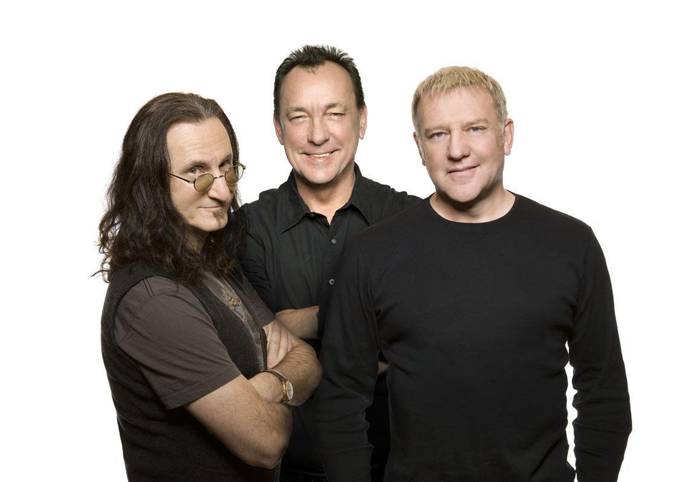

Rush
Years Active: 1968–2015, 2025–present
Genre/s: Progressive rock, hard rock, heavy metal
Label/s: Moon, Mercury, Anthem, Vertigo, Atlantic, Roadrunner
Members: Alex Lifeson, Geddy Lee
Rush is a Canadian rock band, formed in Toronto in 1968. The band's original line-up included guitarist Alex Lifeson, drummer John Rutsey, and bassist and vocalist Jeff Jones, whom Geddy Lee replaced shortly after its formation. Rush went through a few line-up changes over the next six years, before arriving at its classic power trio line-up with the addition of Neil Peart in July 1974, replacing Rutsey four months after the release of their self-titled debut album. The line-up of Lifeson, Lee, and Peart remained stable for the remainder of the band's initial run until 2015, after which Peart retired from music. Lifeson later confirmed in 2018 that the band had disbanded, citing Peart's health as a contributing factor. Lifeson and Lee continued to occasionally work together in the years following Peart's death in 2020. Lifeson and Lee announced a 2026–2027 reunion tour as Rush in October 2025, with Anika Nilles filling in for Peart, and Loren Gold as the band's keyboardist.
Rush is known for their virtuosic musicianship, complex compositions and eclectic lyrical motifs, which drew primarily on science fiction, fantasy, and philosophy. The band's style changed over the years, from a blues-inspired hard rock beginning, later moving into progressive rock, then a period in the 1980s marked by heavy use of synthesizers, before returning to guitar-driven rock in the remainder of their career. The members of Rush have been acknowledged as some of the most proficient players on their respective instruments, with each winning numerous awards in magazine readers' polls in various years.
As of 2024, Rush ranks 90th in the US with sales of 26 million albums and industry sources estimate their total worldwide album sales at over 42 million. They have been awarded 14 platinum and 3 multi-platinum albums in the US and 17 platinum albums in Canada. Rush was nominated for seven Grammy Awards, won ten Juno Awards, and won an International Achievement Award at the 2009 SOCAN Awards. The band was inducted into the Canadian Music Hall of Fame in 1994 and the Rock and Roll Hall of Fame in 2013. Music critics consider Rush to be one of the greatest rock bands of all time.